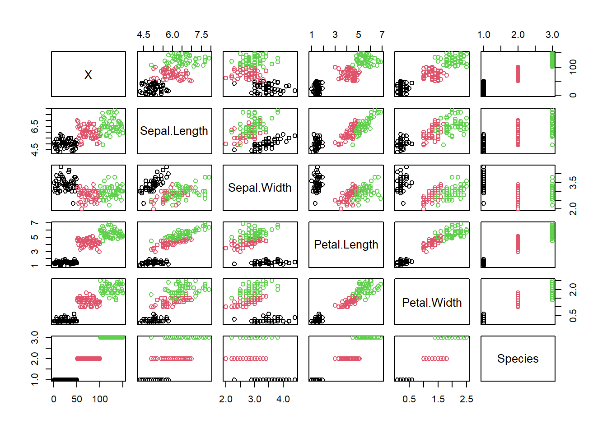

library(ggplot2) # ggplot is for making publication quality graphsIris dataset analysis walkthrough
This file is intended as a summary of some of the important features discussed during the ‘R for Statistics’ training course.
The aspects covered are:
- Loading data from csv files
- Descriptive statistics
- Graphing with base R and ggplot
- Simple linear modelling with continuous outcomes, and categorical and continuous predictors
I do not include model diagnostics, nor data wrangling with tidyverse here. These are important topics that are introduced in the individual session worksheets.
1 Loading and describing data.
Load a package we will need:
Load data from a csv file using read.csv
iris <- read.csv("iris.csv")Get some statistics on the structure of the dataset to make sure it’s all read in OK.
nrow(iris)[1] 150str(iris)'data.frame': 150 obs. of 6 variables:
$ X : int 1 2 3 4 5 6 7 8 9 10 ...
$ Sepal.Length: num 5.1 4.9 4.7 4.6 5 5.4 4.6 5 4.4 4.9 ...
$ Sepal.Width : num 3.5 3 3.2 3.1 3.6 3.9 3.4 3.4 2.9 3.1 ...
$ Petal.Length: num 1.4 1.4 1.3 1.5 1.4 1.7 1.4 1.5 1.4 1.5 ...
$ Petal.Width : num 0.2 0.2 0.2 0.2 0.2 0.4 0.3 0.2 0.2 0.1 ...
$ Species : chr "setosa" "setosa" "setosa" "setosa" ...Extract single variables (vectors) from the dataset
iris$Sepal.Length [1] 5.1 4.9 4.7 4.6 5.0 5.4 4.6 5.0 4.4 4.9 5.4 4.8 4.8 4.3 5.8 5.7 5.4 5.1
[19] 5.7 5.1 5.4 5.1 4.6 5.1 4.8 5.0 5.0 5.2 5.2 4.7 4.8 5.4 5.2 5.5 4.9 5.0
[37] 5.5 4.9 4.4 5.1 5.0 4.5 4.4 5.0 5.1 4.8 5.1 4.6 5.3 5.0 7.0 6.4 6.9 5.5
[55] 6.5 5.7 6.3 4.9 6.6 5.2 5.0 5.9 6.0 6.1 5.6 6.7 5.6 5.8 6.2 5.6 5.9 6.1
[73] 6.3 6.1 6.4 6.6 6.8 6.7 6.0 5.7 5.5 5.5 5.8 6.0 5.4 6.0 6.7 6.3 5.6 5.5
[91] 5.5 6.1 5.8 5.0 5.6 5.7 5.7 6.2 5.1 5.7 6.3 5.8 7.1 6.3 6.5 7.6 4.9 7.3
[109] 6.7 7.2 6.5 6.4 6.8 5.7 5.8 6.4 6.5 7.7 7.7 6.0 6.9 5.6 7.7 6.3 6.7 7.2
[127] 6.2 6.1 6.4 7.2 7.4 7.9 6.4 6.3 6.1 7.7 6.3 6.4 6.0 6.9 6.7 6.9 5.8 6.8
[145] 6.7 6.7 6.3 6.5 6.2 5.9Note that R is case sensitive so this does not work:
iris$sepal.lengthNULLGet individual elements if we want to.
iris$Sepal.Length[1][1] 5.1Get the 2nd, 4th and 6th elements (extract a subset by position)
iris$Sepal.Length[c(2,4,6)][1] 4.9 4.6 5.4Get the 10th to the 20th elements of the vector
iris$Sepal.Length[10:20] [1] 4.9 5.4 4.8 4.8 4.3 5.8 5.7 5.4 5.1 5.7 5.1By default, Species is read as a string (because the option stringsAsFactors is set to FALSE by default).
So if we want to use Species as a categorical variable we have to convert it into a ‘factor’.
iris$Species <- factor(iris$Species)We can use the default plotting system to make a quick plot, but it’s a bit ugly!
plot(iris, col=iris$Species)
Demonstration of using the base hist function if we want a quick histogram
iris$Sepal.Width |> hist(breaks=20)Summary does different things depending on what kind of object is passed to it.
summary(iris) X Sepal.Length Sepal.Width Petal.Length
Min. : 1.00 Min. :4.300 Min. :2.000 Min. :1.000
1st Qu.: 38.25 1st Qu.:5.100 1st Qu.:2.800 1st Qu.:1.600
Median : 75.50 Median :5.800 Median :3.000 Median :4.350
Mean : 75.50 Mean :5.843 Mean :3.057 Mean :3.758
3rd Qu.:112.75 3rd Qu.:6.400 3rd Qu.:3.300 3rd Qu.:5.100
Max. :150.00 Max. :7.900 Max. :4.400 Max. :6.900
Petal.Width Species
Min. :0.100 setosa :50
1st Qu.:0.300 versicolor:50
Median :1.300 virginica :50
Mean :1.199
3rd Qu.:1.800
Max. :2.500 summary(iris$Sepal.Width) Min. 1st Qu. Median Mean 3rd Qu. Max.
2.000 2.800 3.000 3.057 3.300 4.400 summary(iris$Species) setosa versicolor virginica
50 50 50 We can do a statistical test using two variables. (Although this association is better tested using lm as below)
cor.test(iris$Sepal.Length, iris$Petal.Width)
Pearson's product-moment correlation
data: iris$Sepal.Length and iris$Petal.Width
t = 17.296, df = 148, p-value < 2.2e-16
alternative hypothesis: true correlation is not equal to 0
95 percent confidence interval:
0.7568971 0.8648361
sample estimates:
cor
0.8179411 Find the minimum sepal width
min(iris$Sepal.Width)[1] 2Tabulate the species to find the number of observations for each
table(iris$Species)
setosa versicolor virginica
50 50 50 2 Graphing
Make a histogram with red bars
hist(iris$Sepal.Length, col="red")To quickly demonstrate the formula interface we made a (not very nice) boxplot.
boxplot( Petal.Length ~ Species , data=iris)Could we have done this with the native pipe?
This doesn’t work (because if the arguments are unnamed iris needs to be the second argument)
iris |> boxplot(Petal.Length ~ Species)But either of these two lines does work:
iris |> boxplot(Petal.Length ~ Species , data=_)
iris |> boxplot(data=_ , Petal.Length ~ Species )
We can make a much nice boxplot using ggplot2. Make sure you understand what each of these lines does!
iris |> ggplot() +
aes(x=Species , y=Petal.Length, fill=Species) +
geom_boxplot() +
ggtitle("Petal length by Species") +
theme_bw() +
scale_y_log10(breaks=c(1,2,3,4,5,6,7,8,9,10)) +
labs(y="Petal length (cm)")If we want to export the plot we can assign it to an object then save that object with ggsave:
boxplot1 <- ggplot(iris) +
aes(x=Species , y=Petal.Length, fill=Species) +
geom_boxplot()
ggsave("lengthboxplot.png",boxplot1, width=5, height=5, dpi="retina")I was asked what would happen if we wanted to load data with no header. The best answer is ‘try it and see’. We make iris2.csv with no header row. When we tried to load it, the first row of values was assumed to be the header.
iris2 <- read.csv("iris2.csv")
head(iris2) X1 X5.1 X3.5 X1.4 X0.2 setosa
1 2 4.9 3.0 1.4 0.2 setosa
2 3 4.7 3.2 1.3 0.2 setosa
3 4 4.6 3.1 1.5 0.2 setosa
4 5 5.0 3.6 1.4 0.2 setosa
5 6 5.4 3.9 1.7 0.4 setosa
6 7 4.6 3.4 1.4 0.3 setosaSo we looked at the help file to check how to correctly load the data, and how to assign names if we wanted to.
iris2 <- read.csv(file = "iris2.csv",
header=FALSE,
col.names = c("X", "PL", "PW", "SW", "SL", "Species"))
head(iris2) X PL PW SW SL Species
1 1 5.1 3.5 1.4 0.2 setosa
2 2 4.9 3.0 1.4 0.2 setosa
3 3 4.7 3.2 1.3 0.2 setosa
4 4 4.6 3.1 1.5 0.2 setosa
5 5 5.0 3.6 1.4 0.2 setosa
6 6 5.4 3.9 1.7 0.4 setosa3 Modelling
Most of our statistical tests can be thought of in terms of statistical models. Simple linear regression models are the simplest models, we can do most things by generalisaing these.
In R, we use a formula to describe the model we want to estimate. Here we want to model how the average of sepal width varies (statistically, not necessarily causally) with sepal length.
lm(data=iris , Sepal.Width ~ Sepal.Length)
Call:
lm(formula = Sepal.Width ~ Sepal.Length, data = iris)
Coefficients:
(Intercept) Sepal.Length
3.41895 -0.06188 To do anything useful we need to make an lm object (here called model1)
model1 <- lm(data=iris , Sepal.Width ~ Sepal.Length)Now we extract the model summary
summary(model1)
Call:
lm(formula = Sepal.Width ~ Sepal.Length, data = iris)
Residuals:
Min 1Q Median 3Q Max
-1.1095 -0.2454 -0.0167 0.2763 1.3338
Coefficients:
Estimate Std. Error t value Pr(>|t|)
(Intercept) 3.41895 0.25356 13.48 <2e-16 ***
Sepal.Length -0.06188 0.04297 -1.44 0.152
---
Signif. codes: 0 '***' 0.001 '**' 0.01 '*' 0.05 '.' 0.1 ' ' 1
Residual standard error: 0.4343 on 148 degrees of freedom
Multiple R-squared: 0.01382, Adjusted R-squared: 0.007159
F-statistic: 2.074 on 1 and 148 DF, p-value: 0.1519Get the gtsummary package if you don’t have it already. (with install.packages("gtsummary")).
The tbl_regression function from this package makes a nicely formatted regression table.
gtsummary::tbl_regression(model1)| Characteristic | Beta | 95% CI1 | p-value |
|---|---|---|---|
| Sepal.Length | -0.06 | -0.15, 0.02 | 0.2 |
| 1 CI = Confidence Interval | |||
We can also use ggplot to draw a linear model: Note how the slope and intercept of the stat_smooth line corresponds to the model summary output
iris |> ggplot() +
aes(x=Sepal.Length ,
y=Sepal.Width,
) +
geom_point() +
theme_bw() +
stat_smooth(method="lm")`geom_smooth()` using formula = 'y ~ x'By adding colours we can see that our first model may not be the best, because there is clearly an effect of species on the outcome variable that we have ignored. So we should estimate a separate line for each species, but consider that we have changed the reserach question quite substantially:
iris |> ggplot() +
aes(x=Sepal.Length ,
y=Sepal.Width,
shape=Species,
col=Species) +
geom_point() +
theme_bw() +
stat_smooth(method="lm")`geom_smooth()` using formula = 'y ~ x'We can make linear models corresponding to more complex relationships! This is an advantage of using linear models instead of other ‘ad hoc’ statistical testing. This model corrects for the effect of species on sepal width:
Entering just the main effect (as below) lead to a separate but parallel line for each species. The slope (effect of sepal length) does not vary with species.
model2 <- lm(data = iris , Sepal.Width ~ Sepal.Length + Species )
summary(model2)
Call:
lm(formula = Sepal.Width ~ Sepal.Length + Species, data = iris)
Residuals:
Min 1Q Median 3Q Max
-0.95096 -0.16522 0.00171 0.18416 0.72918
Coefficients:
Estimate Std. Error t value Pr(>|t|)
(Intercept) 1.67650 0.23536 7.123 4.46e-11 ***
Sepal.Length 0.34988 0.04630 7.557 4.19e-12 ***
Speciesversicolor -0.98339 0.07207 -13.644 < 2e-16 ***
Speciesvirginica -1.00751 0.09331 -10.798 < 2e-16 ***
---
Signif. codes: 0 '***' 0.001 '**' 0.01 '*' 0.05 '.' 0.1 ' ' 1
Residual standard error: 0.289 on 146 degrees of freedom
Multiple R-squared: 0.5693, Adjusted R-squared: 0.5604
F-statistic: 64.32 on 3 and 146 DF, p-value: < 2.2e-16But we can add an interaction term to allow the effect of sepal length to vary by species These two models are the same.
model4 <- lm(data = iris , Sepal.Width ~ Sepal.Length + Species + Sepal.Length:Species )
model4 <- lm(data = iris , Sepal.Width ~ Sepal.Length * Species )
summary(model4)
Call:
lm(formula = Sepal.Width ~ Sepal.Length * Species, data = iris)
Residuals:
Min 1Q Median 3Q Max
-0.72394 -0.16327 -0.00289 0.16457 0.60954
Coefficients:
Estimate Std. Error t value Pr(>|t|)
(Intercept) -0.5694 0.5539 -1.028 0.305622
Sepal.Length 0.7985 0.1104 7.235 2.55e-11 ***
Speciesversicolor 1.4416 0.7130 2.022 0.045056 *
Speciesvirginica 2.0157 0.6861 2.938 0.003848 **
Sepal.Length:Speciesversicolor -0.4788 0.1337 -3.582 0.000465 ***
Sepal.Length:Speciesvirginica -0.5666 0.1262 -4.490 1.45e-05 ***
---
Signif. codes: 0 '***' 0.001 '**' 0.01 '*' 0.05 '.' 0.1 ' ' 1
Residual standard error: 0.2723 on 144 degrees of freedom
Multiple R-squared: 0.6227, Adjusted R-squared: 0.6096
F-statistic: 47.53 on 5 and 144 DF, p-value: < 2.2e-16We can use the emmeans package to extract the slope at each level of Species from model 4.
emmeans::emtrends(model4 , pairwise~Species , var="Sepal.Length")$emtrends
Species Sepal.Length.trend SE df lower.CL upper.CL
setosa 0.799 0.1104 144 0.580 1.017
versicolor 0.320 0.0754 144 0.171 0.469
virginica 0.232 0.0612 144 0.111 0.353
Confidence level used: 0.95
$contrasts
contrast estimate SE df t.ratio p.value
setosa - versicolor 0.4788 0.1337 144 3.582 0.0013
setosa - virginica 0.5666 0.1262 144 4.490 <.0001
versicolor - virginica 0.0878 0.0971 144 0.905 0.6382
P value adjustment: tukey method for comparing a family of 3 estimates The ANOVA function can be used to generate the old-fashioned ANOVA table corresponding to each model:
anova(model4)Analysis of Variance Table
Response: Sepal.Width
Df Sum Sq Mean Sq F value Pr(>F)
Sepal.Length 1 0.3913 0.3913 5.2757 0.02307 *
Species 2 15.7225 7.8613 105.9948 < 2.2e-16 ***
Sepal.Length:Species 2 1.5132 0.7566 10.2011 7.19e-05 ***
Residuals 144 10.6800 0.0742
---
Signif. codes: 0 '***' 0.001 '**' 0.01 '*' 0.05 '.' 0.1 ' ' 1Or to test whether one model is a significantly better fit than another:
anova(model1 , model2, model4)Analysis of Variance Table
Model 1: Sepal.Width ~ Sepal.Length
Model 2: Sepal.Width ~ Sepal.Length + Species
Model 3: Sepal.Width ~ Sepal.Length * Species
Res.Df RSS Df Sum of Sq F Pr(>F)
1 148 27.916
2 146 12.193 2 15.7225 105.995 < 2.2e-16 ***
3 144 10.680 2 1.5132 10.201 7.19e-05 ***
---
Signif. codes: 0 '***' 0.001 '**' 0.01 '*' 0.05 '.' 0.1 ' ' 1Here we see model 4 is better than model 2, (and model 2 is better than model 1). So there is good evidence that we should fit independent slopes for each species.
4 Some linear algebra
I was asked about the maths underlying the linear regression.
Linear Algebra for linear regression is straightforward, and is explained here (https://xebia.com/blog/the-linear-algebra-behind-linear-regression/).
Most of you will not need to worry about this! You can calculate the coefficients by extracting the model matrix, then applying the following formula:
X <- model.matrix(model2)
b = solve(t(X)%*%X) %*%
t(X) %*%
iris$Sepal.Width
b [,1]
(Intercept) 1.6765001
Sepal.Length 0.3498801
Speciesversicolor -0.9833885
Speciesvirginica -1.0075104Compare it to:
coef(model2) (Intercept) Sepal.Length Speciesversicolor Speciesvirginica
1.6765001 0.3498801 -0.9833885 -1.0075104 Get the residual error
sigma <- ((X %*% b - iris$Sepal.Width) |> sd())*sqrt((149/146))
sigma[1] 0.288989compare it to:
sigma(model2)[1] 0.2889895 Day 3 script - a bit more analysis, ANOVA and log-transformation
On day three we looked at a few different graphs:
library(ggplot2)
library(ggbeeswarm)Warning: package 'ggbeeswarm' was built under R version 4.3.3A box plot shows a great ‘five point summary’ for each distribution
ggplot(iris) + aes(x=Species, y=Petal.Length, fill=Species) +
geom_boxplot(outlier.colour = NA) +
geom_beeswarm(size=1)The log-scale graph suggested that a log-transformed model might be more appropriate
ggplot(iris) + aes(x=Species, y=Petal.Length, fill=Species) +
geom_boxplot(outlier.colour = NA) +
geom_beeswarm(size=1) +
scale_y_log10()A ‘dynamite’ plot is less useful, but could be acceptable if you overlay the true data points.
ggplot(iris) + aes(x=Species, y=Petal.Length, fill=Species) +
stat_summary(geom="col") +
stat_summary(geom="errorbar", width=0.5) +
geom_beeswarm()No summary function supplied, defaulting to `mean_se()`
No summary function supplied, defaulting to `mean_se()`We can estimate a model corresponding to these graphs. The 1+ tells R to include an intercept term. We don’t need to explicity say this, but if we don’t want the intercept then we need to use 0+.
model_petal_length_species <- lm(data=iris , Petal.Length ~ 1+Species)This is an anova for the hypothesis that all the species differences are zero
anova(model_petal_length_species)Analysis of Variance Table
Response: Petal.Length
Df Sum Sq Mean Sq F value Pr(>F)
Species 2 437.10 218.551 1180.2 < 2.2e-16 ***
Residuals 147 27.22 0.185
---
Signif. codes: 0 '***' 0.001 '**' 0.01 '*' 0.05 '.' 0.1 ' ' 1The model summary shows the individual regression coefficients
summary(model_petal_length_species)
Call:
lm(formula = Petal.Length ~ 1 + Species, data = iris)
Residuals:
Min 1Q Median 3Q Max
-1.260 -0.258 0.038 0.240 1.348
Coefficients:
Estimate Std. Error t value Pr(>|t|)
(Intercept) 1.46200 0.06086 24.02 <2e-16 ***
Speciesversicolor 2.79800 0.08607 32.51 <2e-16 ***
Speciesvirginica 4.09000 0.08607 47.52 <2e-16 ***
---
Signif. codes: 0 '***' 0.001 '**' 0.01 '*' 0.05 '.' 0.1 ' ' 1
Residual standard error: 0.4303 on 147 degrees of freedom
Multiple R-squared: 0.9414, Adjusted R-squared: 0.9406
F-statistic: 1180 on 2 and 147 DF, p-value: < 2.2e-16We can get the pairwise contrasts with emmeans.
emmeans::emmeans(model_petal_length_species , pairwise ~ Species)$emmeans
Species emmean SE df lower.CL upper.CL
setosa 1.46 0.0609 147 1.34 1.58
versicolor 4.26 0.0609 147 4.14 4.38
virginica 5.55 0.0609 147 5.43 5.67
Confidence level used: 0.95
$contrasts
contrast estimate SE df t.ratio p.value
setosa - versicolor -2.80 0.0861 147 -32.510 <.0001
setosa - virginica -4.09 0.0861 147 -47.521 <.0001
versicolor - virginica -1.29 0.0861 147 -15.012 <.0001
P value adjustment: tukey method for comparing a family of 3 estimates We said the log-transformation might be needed. We can estimate a model for log(Petal.Length)
model_petal_length_species_log <-
lm(data=iris , log(Petal.Length) ~ Species)Now emmeans reports ratios instead of differences. Could make more sense biologically!
emmeans::emmeans(model_petal_length_species_log ,
pairwise ~ Species, type="response")$emmeans
Species response SE df lower.CL upper.CL
setosa 1.45 0.0230 147 1.41 1.50
versicolor 4.23 0.0670 147 4.10 4.37
virginica 5.53 0.0874 147 5.36 5.70
Confidence level used: 0.95
Intervals are back-transformed from the log scale
$contrasts
contrast ratio SE df null t.ratio p.value
setosa / versicolor 0.343 0.00767 147 1 -47.835 <.0001
setosa / virginica 0.263 0.00588 147 1 -59.747 <.0001
versicolor / virginica 0.766 0.01714 147 1 -11.912 <.0001
P value adjustment: tukey method for comparing a family of 3 estimates
Tests are performed on the log scale